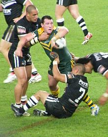

RUGBY

Rugby usually refers to rugby union or sometimes rugby league, which are both team sports, rugby union originating at Rugby School in Rugby, Warwickshire, and rugby league originating in Huddersfield, West Yorkshire after splitting and forming the Northern Union in 1896 (what is now known as rugby league). Rugby football (both league and union) is one of many versions of football played at English public schools in the 19th century.[1]. Although rugby league initially used rugby union rules, they are now wholly separate sports. In addition to the two existing codes, both codes of Gridiron football (American football and Canadian football) have evolved from rugby football, but themselves also completely different sports altogether..